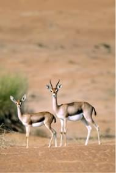
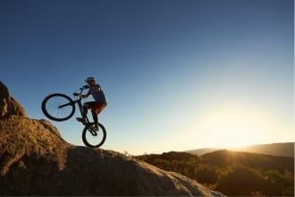
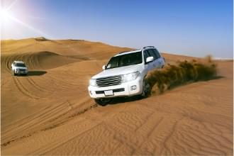
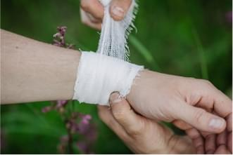

Edge of the World
Edge of the World
Edge of the World
Edge of the World
Edge of the World
Edge of the World
Edge of the World
Edge of the World
Edge of the World
- 22KM
-

-

Rising steeply from the ancient seabed below, these towering limestone cliffs offer up some of the most awe-inspiring scenery in Riyadh. The Edge of the World, officially called Jabal Fihrayn, forms part of the Tuwayq escarpment, a formidable limestone mountain that stretches for 800 kilometres through central Saudi Arabia, all the way from Al Qassim in the north to the Empty Quarter in the south.
Appropriate footwear is a necessity and be sure to have your wits about you if you’re planning to take a selfie or scramble to a craggy ledge, as the rocks and boulders are loose and often unstable.
The cliffs of Jabal Fihrayn soar skywards to a height of 1,006 metres, forming a naturally curved wall that erupts out of the vast plains which stretch out northwest of Riyadh. Standing on the cantilevered plateau or sheer precipice, and gazing towards the infinite horizon, gives the thrilling – and slightly surreal – feeling of standing on the very edge of the world. It is this sensation, of course, which has lent the spot its popular name.
A well-trodden trail leads visitors to the furthest vantage point: a cluster of wind-sculpted pillars where the panorama is especially breathtaking. There are phenomenal views at every turn, and if you’re feeling brave, try exploring some of the site’s naturally formed ledges and overhangs.
There’s a particularly exciting ledge marked on the map that curves around the escarpment and offers a jaw-dropping perspective over a point known as ‘the window’, a natural amphitheater between two cliffs. This dip in the escarpment is where hikers can set off along a trail that leads down to the lower plateau and valley, in which you can find fossils from some 50 million years ago.
If, like most visitors, you’ve come to the Edge of the World simply to admire the view with a picnic, time your visit for sunset, when the dramatic cliffs are bathed in luminous shades of red and orange. However, unless it’s mid-week, you’re unlikely to be alone. Sunset tends to draw groups from Riyadh, and an isolated tourist camp and coffee tent have been set up to cater to their needs.
To the Batcave
For those driving via Sadus, a blink-and-you’ll-miss it hole in the ground makes for a curious stop-off en route. The metre-square opening in the mountain is the entrance to an unexpectedly large underground cave, home to resident bats. It’s possible to descend into the dark, humid cavern via a sturdy ladder, which someone has thoughtfully bolted to the entrance.
The Edge of the World has enjoyed increased publicity over the past few years, but it remains a remote destination and the 1.5 hour drive from Riyadh is relatively unmarked. There are a number of access points once the paved roads end – either via the wide, tree-studded terrain of Acacia Valley (the gates close at sunset) or via Sadhus. If you opt for the turn-off at Sadhus Dam, it’s a bone-jolting 45 minute journey across uneven rock and gravelly sand terrain, which can be deceptively soft in parts. While it is possible to drive all the way to the plateau, most abandon their vehicles at the foot of the steep, challenging hills just a few hundred meters away from the site and walk the rest of the way.
Given the giddying heights, it’s not recommended to camp anywhere near the escarpment. The best place to pitch a tent is in Acacia Valley, where there are many sheltered nooks, lots of trees for shade and, with no lights at all in the area, magnificent star-filled skies at night. Entry to the valley is via a gate manned by rangers and though camping is permitted, the gates are closed at sunset – even to those wishing to leave.
FEEDBACK-  Natural World
-  Activities
-  Driving
-  First AID
-
 Further Reading
Further Reading